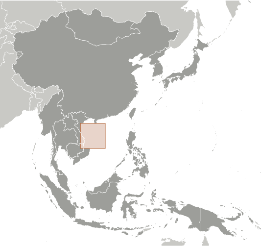
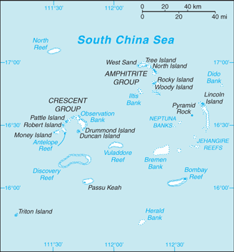
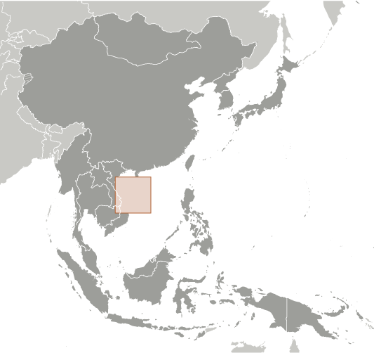
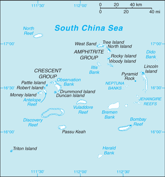

East & Southeast Asia :: PARACEL ISLANDS
Introduction :: PARACEL ISLANDS
-
The Paracel Islands are surrounded by productive fishing grounds and by potential oil and gas reserves. In 1932, French Indochina annexed the islands and set up a weather station on Pattle Island; maintenance was continued by its successor, Vietnam. China has occupied all the Paracel Islands since 1974, when its troops seized a South Vietnamese garrison occupying the western islands. China built a military installation on Woody Island with an airfield and artificial harbor. The islands also are claimed by Taiwan and Vietnam.
Geography :: PARACEL ISLANDS
-
Southeastern Asia, group of small islands and reefs in the South China Sea, about one-third of the way from central Vietnam to the northern Philippines16 30 N, 112 00 ESoutheast Asiatotal: ca. 7.75 sq kmland: ca. 7.75 sq kmwater: 0 sq kmcountry comparison to the world: 245land area is about 13 times the size of the National Mall in Washington, DC0 km518 kmNAtropicalmostly low and flatmean elevation: NAelevation extremes: lowest point: South China Sea 0 mhighest point: unnamed location on Rocky Island 14 mnoneagricultural land: 0%arable land 0%; permanent crops 0%; permanent pasture 0%forest: 0%other: 100% (2011 est.)0 sq km (2012)a population of over 1,000 Chinese resides on Woody Island, the largest of the Paracels; there are scattered Chinese garrisons on some other islandstyphoonsChina's use of dredged sand and coral to build artificial islands harms reef systems; ongoing human activities, including military operations, infrastructure construction, and tourism endangers local ecosystem including birds, fish, marine mammals, and marine reptilescomposed of 130 small coral islands and reefs divided into the northeast Amphitrite Group and the western Crescent Group
People and Society :: PARACEL ISLANDS
-
no indigenous inhabitantsnote: Chinese activity has increased in recent years, particularly on Woody Island, where the population exceeds 1,000; there are scattered Chinese garrisons on some other islandsa population of over 1,000 Chinese resides on Woody Island, the largest of the Paracels; there are scattered Chinese garrisons on some other islands
Government :: PARACEL ISLANDS
-
conventional long form: noneconventional short form: Paracel Islandsetymology: Portuguese navigators began to refer to the "Ilhas do Pracel" in the 16th century as a designation of low lying islets, sandbanks, and reefs scattered over a wide area; over time the name changed to "parcel" and then "paracel"
Economy :: PARACEL ISLANDS
-
The islands have the potential for oil and gas development. Waters around the islands support commercial fishing, but the islands themselves are not populated on a permanent basis.
Transportation :: PARACEL ISLANDS
-
1 (2013)country comparison to the world: 230total: 11,524 to 2,437 m: 1 (2017)small Chinese port facilities on Woody Island and Duncan Island
Military and Security :: PARACEL ISLANDS
-
occupied by China
Transnational Issues :: PARACEL ISLANDS
-
occupied by China, also claimed by Taiwan and Vietnam